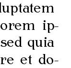

Hanging punctuation
Hanging has been very popular recently… last week USA hanged Saddam, and now I am going to hang punctuation.
I have learned recently that pdfTeX supports hanging punctuation, which is pretty neat. An example:
=2
pcode enrm\-=300<br /> pcode enrm.=220
pcode enrm`,=200
I have made a test of hanging punctuation (open the file and read on). There are six pages, first three typeset in Toruńska Antykwa (a very beautiful font) and the other in Palatino. There are three versions: complete hanging punctuation, half hanging and not hanging.
I like Toruńska Antykwa with hanging punctuation, but I’m not sure which one. Maybe the best would be to hang the hyphens and leave dots and comas inside? (or hang them only partially)
On the other hand, hanging of Palatino seems to be a huge failure. Hanging comas and dots are awful (maybe if they were hanging just a very little bit it would be ok), and hanging hyphens are not particularly beautiful either (maybe if they were hanging less than a half…).
Now, what do you think?
2 thoughts on “Hanging punctuation”
Drc 2007-01-03
open the file and read on – Error 404 – Not Found :angry:
tasuki 2007-01-04
hmpfh… corrected…
Add your comment — How does this work?